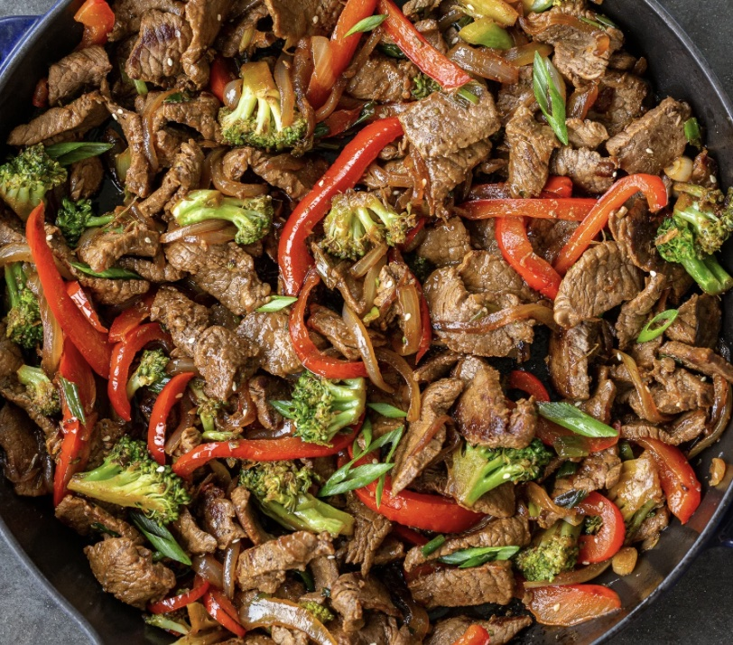

How to Make a Beef Stir-fry

Ingredients and Prep
- (1 pound) beef, preferably sirloin: cut into 2-inch strips
- (1 1/2 cups)broccoli
- (2) carrots: thinly sliced
- (1) red bell pepper: cut into matchsticks
- (2 tablespoon) soy sauce
- (2 tablespoons) sesame seeds
- (1 teaspoon)garlic: minced
- (2 tablespoons) vegetable oil
- (1) green onion: chopped
Instructions
- Heat oil over medium-high heat. Add and stir beef until browned (approx. 3-4 minutes).
- Retrieve and set aside the cooked beef. Add in the broccoli, bell peppers, carrots, green onions, and garlic. Stir vegetables for 2 minutes.
- Add beef back in with the vegetables. Season with soy sauce and sesame seeds. Stir everything until the vegetables reach your preferred texture (approx. 2 more minutes).
- Serve alongside rice, noodles, or carb of choice. Enjoy!